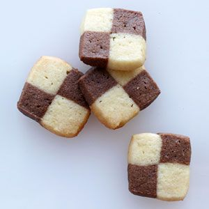

Checkerboard Sables

Description
These cookies were the very first baked goods I ever sent to my long-distance boyfriend. I make these every year because they are so easy and convenient.The dough can be prepared in advance,frozen, and then sliced before baking. These checkerbaord sables have become my signature cookies.
Ingredients
- 1 large egg
- 10 tbps unsalted butter, softened (1 1/4 sticks)
- 1/4 tsp table salt
- 1 tsp vanilla extract
- 1 1/2 cups all-purpose flour (7 1/2 ounces)
- cocoa powder
Directions
- Place egg in small saucepan, cover with 1 inch water, and bring to boil over high heat. Remove pan from heat, cover, and let sit 10 minutes. Meanwhile, fill a small bowl with ice water. Using a slotted spoon, transfer egg to ice water and let stand 5 minutes. Crack egg and peel shell. Separate yolk from white. Discard white. Press yolk through fine-mesh strainer into small bowl.
- In bowl of stand mixer fitted with paddle attachment, beat butter, granulated sugar, salt, and cooked egg yolk on medium speed until light and fluffy, about 4 minutes, scraping down sides of bowl and beater with rubber spatula as needed. Turn mixer to low, add vanilla, and mix until incorporated. Stop mixer; add flour and mix on low speed until just combined, about 30 seconds. Using rubber spatula, press dough into cohesive mass.
- Divide dough in half; roll each piece into log about 6 inches longa nd 1 3/4 inches in diameter. Wrap each log in 12-inch square of parchment paper and twist ends to seal and firmly compact dough into tight cylinder. Chill until firm, about 1 hour.
- Adjust over racks to upper-middle and lower-middle positions and heat oven to 350 degrees. Line 2 rimmed baking sheets with parchment paper. Using chef's knife, slice dough into 1/4-inch-thick rounds, rotating dough so that it won't become misshapen from weight of knife. Place cookies 1 inch apart on baking sheets.
- Bake until centers of cookies are pale golden brown with edges slightly darker than centers, about 15 minutes, rotating baking sheets front to back and top to bottom halfway through baking. Cool cookies on baking sheet 5 minutes; using thin metal spatula, transfer cookies to wire rack and cool to room temperature. Store cooled cookies in airtight container for up to 1 week.
Chocolate Sables: Follow recipe for Sables, reducing flour to 1 1/3 cups and adding 1/4 cup Dutch-process cocoa powder with the flour.
For notes, see Milwaukee Journal Sentinel's 7th annual Holiday Cookie Content notes and Mykitchenandfoodadventures.
Return to top.
Return to homepage.